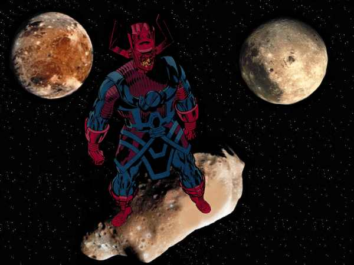

Real name: Galan
Occupation: Ravager of worlds
Group affiliation: None
Base of operations: Mobile
First appearance: Fantastic Four (Vol. 1) #48 (1966)
Height: 28'9"
Weight: 18.2 tons
Eye color: Unknown
Hair color: Black
Powers: Possessed of cosmic power far beyond human imagining, Galactus is able to rearrange matter, project force blasts, teleport vast distances and erect forcefields. A telepath, he can connect to any mind with which he comes in contact.
Weapons: Galactus created a specialized suit of armor to help him
regulate his awesome energies.
A fundamental force of nature on a ceaseless search for sustenance, his
eons-old legend spans the width and breadth of the very cosmos. From the
Skrull homeworld to Shi'ar space, his name is whispered with fear under
cover of darkness -- for depleting a planet's life-sustaining energies
is all that can satiate the awesome hunger of Galactus, devourer of
worlds!
History: Galan -- the being who would become Galactus, sole survivor of a dead universe -- was born on the planet Taa, home to the most advanced civilization in all the stars. But as the world's humanoid population ascended to the pinnacle of prosperity, scaling heights rarely dreamt of since the dawn of creation, creation itself stood on the verge of collapse. The dense sphere of planet-forming, primordial matter propelled outward billions upon billions of years before by the force of a cataclysmic Big Bang had begun to recede, with equally catastrophic results. Taa's civilization was one of the last remaining, and lethal radiation had decimated the planet's population.
Galan, a space explorer, was dispatched to scour the cosmos for a means of salvation. Grasping the inevitability of his planet's demise, he proposed that Taa's survivors meet death on their own terms -- in a glorious fashion befitting the grandeur of their fallen homeworld. Galan led his people's exodus via starship into the Cosmic Egg at the heart of the dying universe, the centralized collection point for the shape and substance of untold worlds. As the vessel approached its final destination, its crew began to succumb to the lethal effects of radiation poisoning. But the sentience of the dying universe spared Galan the fate of his fellow passengers. They both would die, the entity revealed, only to be born anew. The Cosmic Egg absorbed Galan into itself -- bringing into being Galactus, insatiable ravager of worlds.
Time passed beyond reckoning. Hurled outward in Galan's recreated starship by the force of a second Big Bang, Galactus drifted for eons as life began to flourish. Arisen from the ashes of a dead universe, Galactus discovered that he could survive only by visiting a similar fate upon other unsuspecting planets. Consuming their raw energies, he would leave them lifeless and barren. Galactus constructed an immense, planet-sized ship called Taa II to carry him forth on his quest. Though at first compassionate enough to devour only uninhabited worlds, survival dictated he could not be so fastidious.
Galactus sowed the seeds of his eventual downfall when he threatened the planet Zenn-La, home to a highly advanced race of humanoid being. One of the orb's inhabitants, Norrin Radd, persuaded Galactus to spare Zenn-La in exchange for his servitude. As Galactus' herald, Radd would seek out uninhabited worlds for his master to consume. And so Galactus transformed Radd into his Sentinel of the Spaceways: the Silver Surfer.
Eventually, however, Galactus grew determined to consume the energy-rich planet Earth. The Surfer rebelled, and elastic inventor Reed Richards of the legendary team of adventurers known as the Fantastic Four thwarted Galactus under the threat of an alien device called the Ultimate Nullifier -- powerful enough even to eradicate the ravager of worlds. Galactus was forced to spare Earth, but he punished his insubordinate herald by erecting an energy barrier that prevented the Surfer from leaving the planet.
Despite his pledge to Richards, Galactus returned on several occasions to consume Earth. Always, the planet's costumed champions narrowly diverted his appetites. Meanwhile, Galactus devoured numerous inhabited worlds throughout the known universe to slake his hunger. His legend spread across the cosmos, and Galactus became feared as a menace to all star-faring races. Preceding one of his many attempts to destroy Earth, he had gone so long without feeding that his energies were severely depleted. Before his life force ebbed entirely, Richards delivered him from death's door. The grateful Galactus pledged his friendship to the scientist and promised never to attack Earth again.
However, he continued to prey upon other inhabited worlds, and the universe trembled before his awesome might. Believing Galactus to be out of control, galactic forces united to halt his reign of terror. During a battle led by Earth's heroes, Galactus finally was felled. As he lay dying, he told the Surfer that he had allowed himself to be destroyed so he could gain the means to do what must be done in the future. He then warned his former herald that his death was only the beginning, and that a greater horror and purpose remained to come. The once-mighty world-devourer perished, but his energies lived on in the shape of a star -- apparently the true form of Galactus.